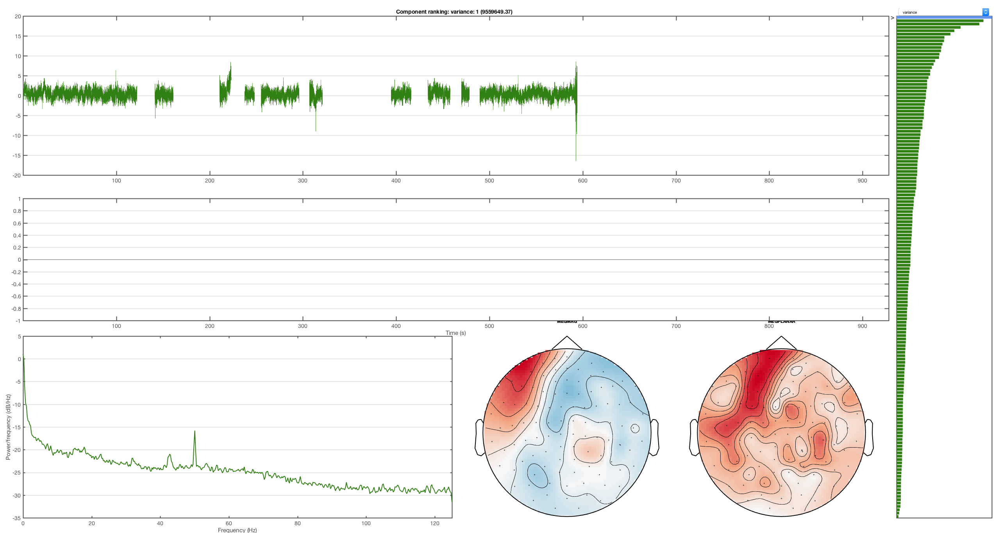
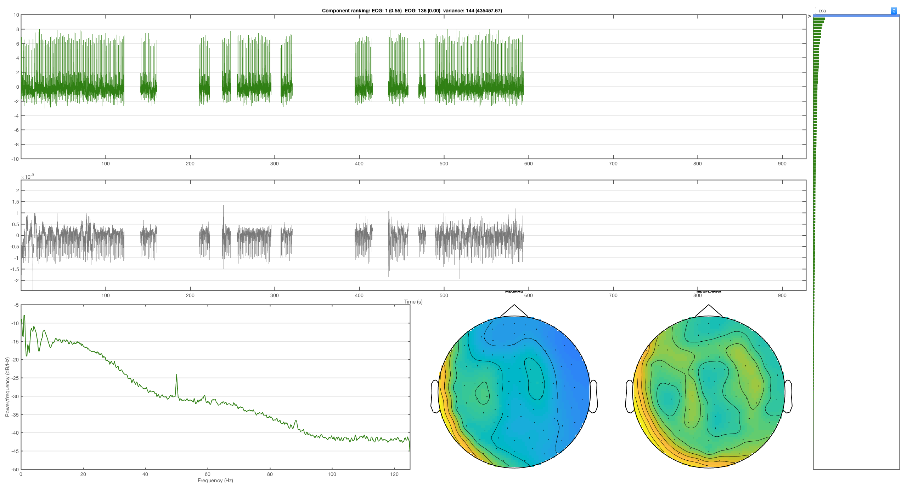
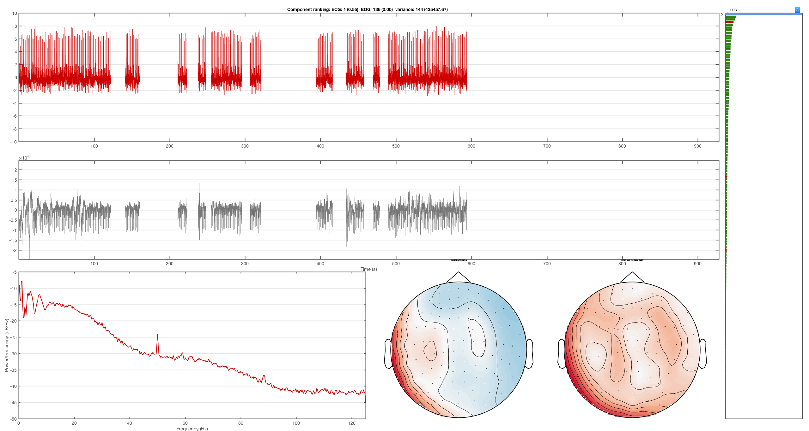

Contents
Preproc - AFRICA (ICA artefact removal)
OSL provides a framework for employing Independent Component Analysis (ICA) to remove certain artefacts from MEG data. Using this framework, sources of interference, such as eye-blinks, ECG and line noise, can be separated from the genuine MEG data and removed.
To use ICA denoising, you will use the function osl_africa.m. osl_africa can currently be applied to Elekta Neuromag and CTF data.
The de-noising process has three stages:
1. Decomposition of data into independent components.
- Here, the MEG data is extracted from the SPM object.
- Each sensor type is normalised by its smallest eigenvalue.
- Bad epochs (as defined by OSLview), bad trials and bad channels are removed.
- fastica is used to decompose the data into a set of independent time courses and associated topographies.
- The default parameters are recommended.
2. Classification of artefact components
- This stage will require user-input.
3. Subtraction of artefact components from data to yield denoised data.
- This final stage is automated and should not require any user input.
- The independent time courses are subtracted from the MEG data. This is implemented via the spm_eeg_montage function which means that subsequent leadfields will be corrected.
To start, load an MEEG object
D = spm_eeg_load(fullfile(osldir,'example_data','preproc_example','manual','subject1_spm_meeg.mat'))
SPM M/EEG data object
Type: continuous
Transform: time
1 conditions
323 channels
232000 samples/trial
1 trials
Sampling frequency: 250 Hz
Loaded from file /Users/romesh/oxford_postdoc/toolboxes/osl/example_data/preproc_example/manual/subject1_spm_meeg.mat
Use the syntax D(channels, samples, trials) to access the data
Type "methods('meeg')" for the list of methods performing other operations with the object
Type "help meeg/method_name" to get help about methods
The main entry point is the function osl_africa. The first argument is the MEEG object, and then key-value pairs of options. The most important options to be aware of are
- do_ica - Perform the ICA decomposition (stage 1, time consuming)
- do_ident - Classify ICA components and select bad channels
- do_remove - Use the bad channels to write an online montage
- used_maxfilter - If working with Elekta data, identify fewer components
- ident_func - Select the identification function (more below)
By default, all three stages will be run, and manual component selection will be used. As we are working with Elekta data , make sure that used_maxfilter is set. To run only the first stage, use
D = osl_africa(D,'do_ident',false,'do_remove',false,'used_maxfilter',true);
Using existing ICA decomposition Using existing bad_components
For the example data, this should take on the order of 2 minutes, depending on your computer. It could potentially be much longer depending on your data. It is important that you remove bad segments from the data using oslview() prior to running osl_africa() as this will have a big effect on the inference of the components.. A new field has been added to the MEEG object storing the results of the calculation
D.ica
ans =
struct with fields:
params: [1×1 struct]
chan_inds: [1×306 double]
norm_vec: [306×1 double]
sm: [323×150 double]
topos: [150×2 struct]
metrics: []
bad_components: []
In general, osl_africa makes changes in memory and returns an MEEG object that can optionally be saved, rather than writing changes to disk automatically. However, because ICA is potentially very time consuming, these results are automatically saved to disk. It's possible to end up in a confusing situation - for example
% D = spm_eeg_load(fname) % D.ica % Error because field does not exist % osl_africa(D) % ICA results saved to disk % D.ica % Error because D has not been reloaded % D = spm_eeg_load(fname) % D.ica % Results work
To avoid this, make sure you use D = osl_africa(D,...) rather than osl_africa(D,...).
It is also worth remembering that the ICA algorithm is randomly initialized, which means that if you run it again, you might not get the same decomposition. To make your results reproducible, set the random number generator in Matlab (e.g. rng(0)) before running osl_africa.
If ICA results are present, osl_africa will not rerun the ICA stage by default unless you set do_ica to true. To examine the components, we can thus use
D = osl_africa(D,'do_remove',false);
Using existing ICA decomposition
This opens the ICA component identification GUI. Often you will want to compare the ICA components to other sensor data such as EOG and EMG. You can specify which channels in the data you want to correlate the components with:
D = osl_africa(D,'do_remove',false,'artefact_channels',{'EOG','ECG'});
Using existing ICA decomposition
Mark a component as bad using the red cross button toolbar, and then close the GUI. If you inspect D, you can see that the bad components have been marked in D.ica.bad_components. At the moment, there are no online montages. To remove these components via an online montage, use
has_montage(D); D = osl_africa(D,'do_ident',false,'do_remove',true);
*0 - none (323 channels)
Using existing ICA decomposition
Using existing bad_components
SPM M/EEG data object
Type: continuous
Transform: time
1 conditions
306 channels
232000 samples/trial
1 trials
Sampling frequency: 250 Hz
Loaded from file /Users/romesh/oxford_postdoc/toolboxes/osl/example_data/preproc_example/manual/subject1_spm_meeg.mat
1 online montage(s) setup
Current montage applied (0=none): 1 ,named: "AFRICA denoised data"
Use the syntax D(channels, samples, trials) to access the data
Type "methods('meeg')" for the list of methods performing other operations with the object
Type "help meeg/method_name" to get help about methods
This will run the removal step and make an online montage with the bad components removed.
has_montage(D);
0 - none (323 channels) *1 - AFRICA denoised data (306 channels)
Remember that these are only in memory, and you need to use D.save() to write the changes to disk. Normally you would run both the identification and the component removal in a single step, using
% D = osl_africa(D)
Note that this will result in two online montages
% has_montage(D)
It can be helpful to delete any unwanted montages prior to using osl_africa e.g.
% D = D.montage('remove',1) % Remove the first montage % has_montage(D)
Automatic component removal
Set the ident_func option to use automatic artefact removal
D_automatic = osl_africa(D,'used_maxfilter',1,'artefact_channels',{'EOG','ECG'},'ident_func',@identify_artefactual_components_auto)
Using existing ICA decomposition
Rejecting IC 115 due to ECG (correlation = 0.55)
Rejecting IC 20 due to EOG (correlation = 0.21)
Rejecting IC 93 due to EOG (correlation = 0.43)
Rejecting IC 126 due to EOG (correlation = 0.24)
SPM M/EEG data object
Type: continuous
Transform: time
1 conditions
306 channels
232000 samples/trial
1 trials
Sampling frequency: 250 Hz
Loaded from file /Users/romesh/oxford_postdoc/toolboxes/osl/example_data/preproc_example/manual/subject1_spm_meeg.mat
2 online montage(s) setup
Current montage applied (0=none): 2 ,named: "AFRICA denoised data"
Use the syntax D(channels, samples, trials) to access the data
Type "methods('meeg')" for the list of methods performing other operations with the object
Type "help meeg/method_name" to get help about methods
SPM M/EEG data object
Type: continuous
Transform: time
1 conditions
306 channels
232000 samples/trial
1 trials
Sampling frequency: 250 Hz
Loaded from file /Users/romesh/oxford_postdoc/toolboxes/osl/example_data/preproc_example/manual/subject1_spm_meeg.mat
2 online montage(s) setup
Current montage applied (0=none): 2 ,named: "AFRICA denoised data"
Use the syntax D(channels, samples, trials) to access the data
Type "methods('meeg')" for the list of methods performing other operations with the object
Type "help meeg/method_name" to get help about methods
This will automatically assign the bad components. If you redo the manual artefact selection, you can make changes to the assignment if you like.
D_touchup = osl_africa(D_automatic,'used_maxfilter',1,'artefact_channels',{'EOG','ECG'});
Using existing ICA decomposition
SPM M/EEG data object
Type: continuous
Transform: time
1 conditions
306 channels
232000 samples/trial
1 trials
Sampling frequency: 250 Hz
Loaded from file /Users/romesh/oxford_postdoc/toolboxes/osl/example_data/preproc_example/manual/subject1_spm_meeg.mat
3 online montage(s) setup
Current montage applied (0=none): 3 ,named: "AFRICA denoised data"
Use the syntax D(channels, samples, trials) to access the data
Type "methods('meeg')" for the list of methods performing other operations with the object
Type "help meeg/method_name" to get help about methods
 You can set the ident_params option to a struct that gets passed to the identification function. For example, you can enable mains and kurtosis artefact rejection, and extra plotting
D_extra = osl_africa(D,'used_maxfilter',1,'artefact_channels',{'EOG','ECG'},'ident_func',@identify_artefactual_components_auto,'ident_params',struct('do_mains',true,'do_kurt',true,'do_plots',true));
Description of method in publications
Independent component analysis (ICA) was used to decompose the sensor data for each session into 150 temporally independent components (tICs) and associated sensor topographies using FastICA (http://research.ics.aalto.fi/ica/fastica). Artifact components were classified via the following procedure. Eye-blink, cardiac and mains interference components were manually identified by the combined inspection of the spatial topography, time course, kurtosis of the time course and frequency spectrum for all components. Eye-blink artifacts typically exhibited high kurtosis (>20), a repeated blink structure in the time course and very structured spatial topographies. Cardiac component time courses strongly resembled the typical ECG signals, as well as having high kurtosis (>20). Mains interference had extremely low kurtosis (typically <−1) and a frequency spectrum dominated by 50 Hz line noise. Artefacts were then rejected by subtracting them out of the data.